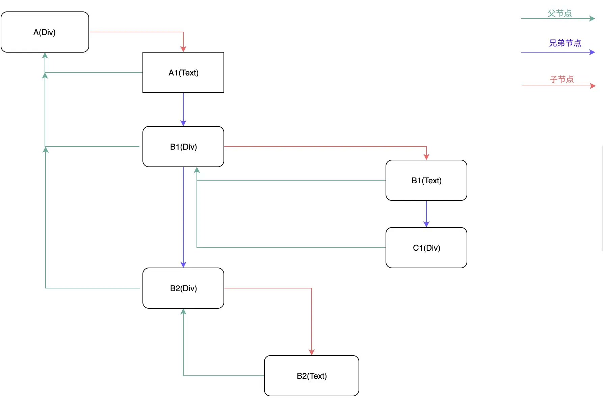
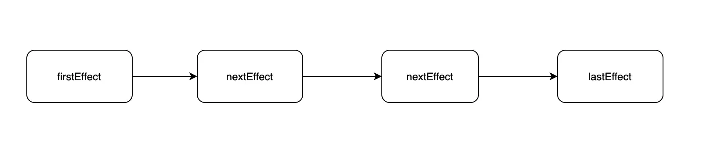
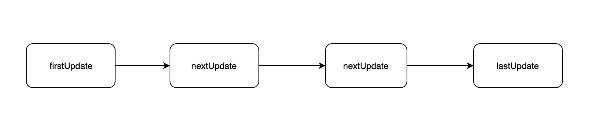
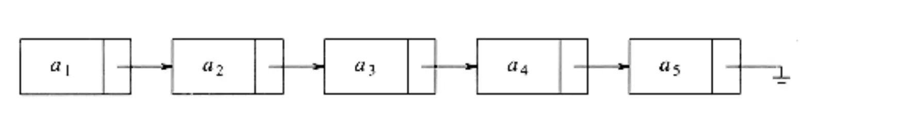

Fiber 为什么是 React 性能的一个飞跃？
参考答案
什么是 Fiber
Fiber 的英文含义是“纤维”，它是比线程（Thread）更细的线，比线程（Thread）控制得更精密的执行模型。在广义计算机科学概念中，Fiber 又是一种协作的（Cooperative）编程模型（协程），帮助开发者用一种【既模块化又协作化】的方式来编排代码。
在 React 中，Fiber 就是 React 16 实现的一套新的更新机制，让 React 的更新过程变得可控，避免了之前采用递归需要一气呵成影响性能的做法。
React Fiber 中的时间分片
把一个耗时长的任务分成很多小片，每一个小片的运行时间很短，虽然总时间依然很长，但是在每个小片执行完之后，都给其他任务一个执行的机会，这样唯一的线程就不会被独占，其他任务依然有运行的机会。
React Fiber 把更新过程碎片化，每执行完一段更新过程，就把控制权交还给 React 负责任务协调的模块，看看有没有其他紧急任务要做，如果没有就继续去更新，如果有紧急任务，那就去做紧急任务。
Stack Reconciler
基于栈的 Reconciler，浏览器引擎会从执行栈的顶端开始执行，执行完毕就弹出当前执行上下文，开始执行下一个函数，直到执行栈被清空才会停止。然后将执行权交还给浏览器。由于 React 将页面视图视作一个个函数执行的结果。每一个页面往往由多个视图组成，这就意味着多个函数的调用。
如果一个页面足够复杂，形成的函数调用栈就会很深。每一次更新，执行栈需要一次性执行完成，中途不能干其他的事儿，只能"一心一意"。结合前面提到的浏览器刷新率，JS 一直执行，浏览器得不到控制权，就不能及时开始下一帧的绘制。如果这个时间超过 16ms，当页面有动画效果需求时，动画因为浏览器不能及时绘制下一帧，这时动画就会出现卡顿。不仅如此，因为事件响应代码是在每一帧开始的时候执行，如果不能及时绘制下一帧，事件响应也会延迟。
Fiber Reconciler
链表结构
在 React Fiber 中用链表遍历的方式替代了 React 16 之前的栈递归方案。在 React 16 中使用了大量的链表。
- 使用多向链表的形式替代了原来的树结构；
<div id="A">
A1
<div id="B1">
B1
<div id="C1"></div>
</div>
<div id="B2">
B2
</div>
</div>
- 副作用单链表；

- 状态更新单链表；

链表是一种简单高效的数据结构，它在当前节点中保存着指向下一个节点的指针；遍历的时候，通过操作指针找到下一个元素。

链表相比顺序结构数据格式的好处就是：
- 操作更高效，比如顺序调整、删除，只需要改变节点的指针指向就好了。
- 不仅可以根据当前节点找到下一个节点，在多向链表中，还可以找到他的父节点或者兄弟节点。
但链表也不是完美的，缺点就是：
- 比顺序结构数据更占用空间，因为每个节点对象还保存有指向下一个对象的指针。
- 不能自由读取，必须找到他的上一个节点。
React 用空间换时间，更高效的操作可以方便根据优先级进行操作。同时可以根据当前节点找到其他节点，在下面提到的挂起和恢复过程中起到了关键作用。
React Fiber 是 React 的更新算法的一次重要升级：
1. 优先级调度
- 描述：Fiber 引入了任务优先级调度机制，可以将更新任务按优先级分组处理。例如，用户交互（点击、输入）通常具有较高的优先级，而网络请求等低优先级任务则可以延迟处理。
- 影响：通过优先级调度，React 可以确保高优先级的任务及时完成，提高用户体验。
2. 分片更新
- 描述：Fiber 支持将更新任务分片成较小的单元（Fiber 节点），在每一帧中只处理一部分更新。
- 影响：这种分片处理避免了长时间阻塞主线程，使得 UI 保持响应，提升了性能和流畅度。
3. 可中断的任务
- 描述：Fiber 允许任务在执行过程中被中断并在之后的空闲时间继续。长时间运行的任务不会阻塞主线程，而是被分解成多个较小的任务。
- 影响：这使得 React 能够在用户操作和动画期间保持流畅，避免了长时间的卡顿。
4. 增量渲染
- 描述：Fiber 支持增量渲染，即在一次更新中只渲染部分组件。这样可以减少每次渲染的工作量。
- 影响：增量渲染提高了渲染效率，避免了全量渲染的性能开销。
5. 恢复和回溯
- 描述：Fiber 支持恢复和回溯机制，可以在更新过程中回退到安全的状态。
- 影响：这保证了应用的一致性和稳定性，即使在遇到错误或需要中断的情况下。
6. 灵活的更新机制
- 描述：Fiber 架构的设计允许 React 更加灵活地管理和调度更新任务，包括支持异步渲染和中断任务的能力。
- 影响：这种灵活性提升了 React 的性能和响应能力，使其能够适应各种复杂的用户交互和应用场景。
总结
React Fiber 通过引入优先级调度、分片更新、可中断任务、增量渲染、恢复和回溯机制，使得 React 在处理复杂更新和用户交互时更加高效、流畅和稳定。这些改进使 Fiber 成为 React 性能的重要飞跃。